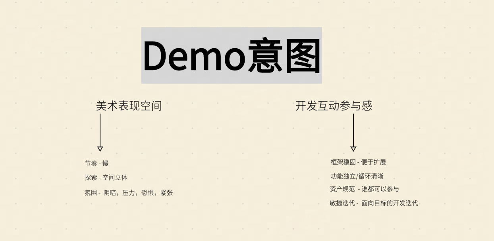
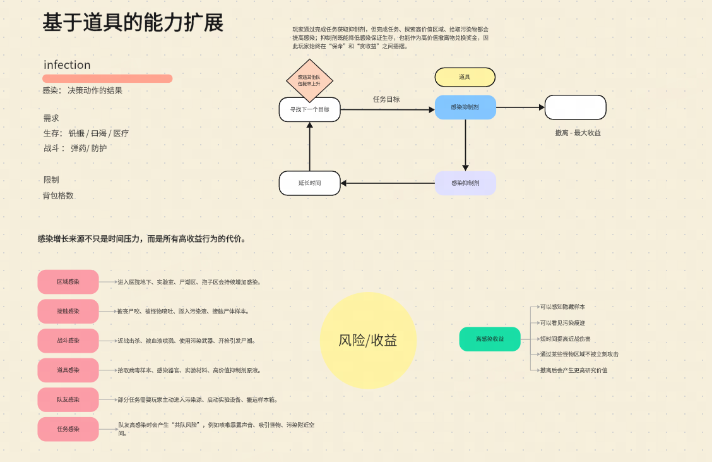
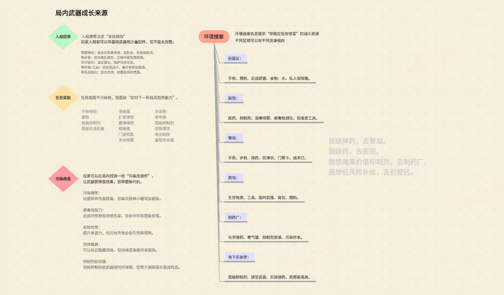
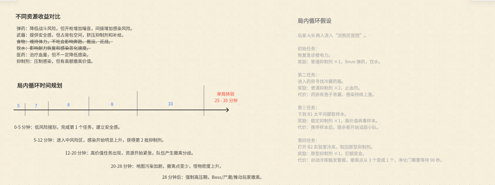
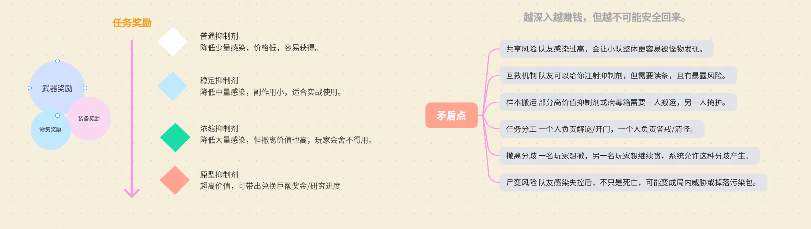
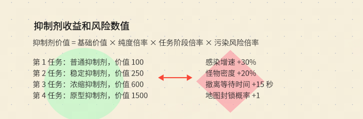
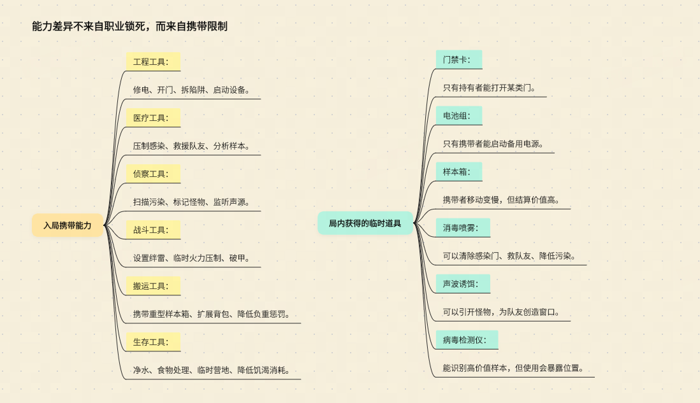
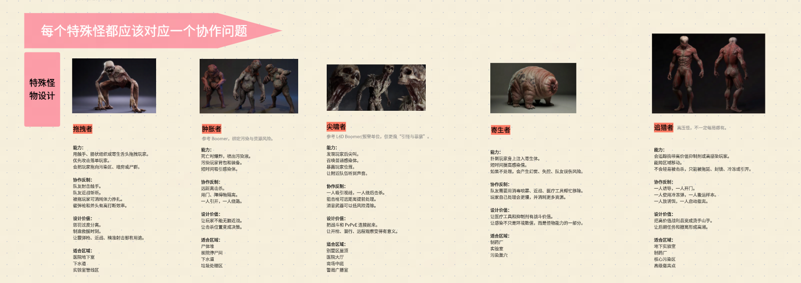
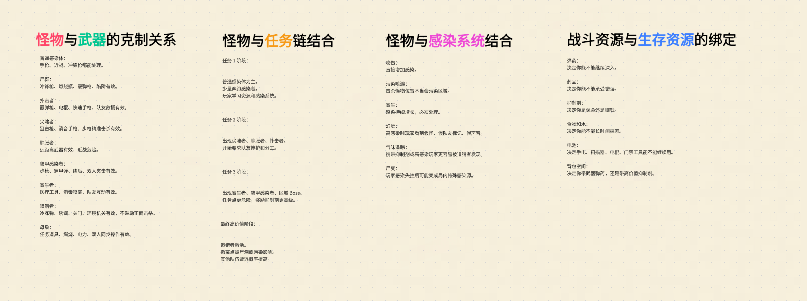
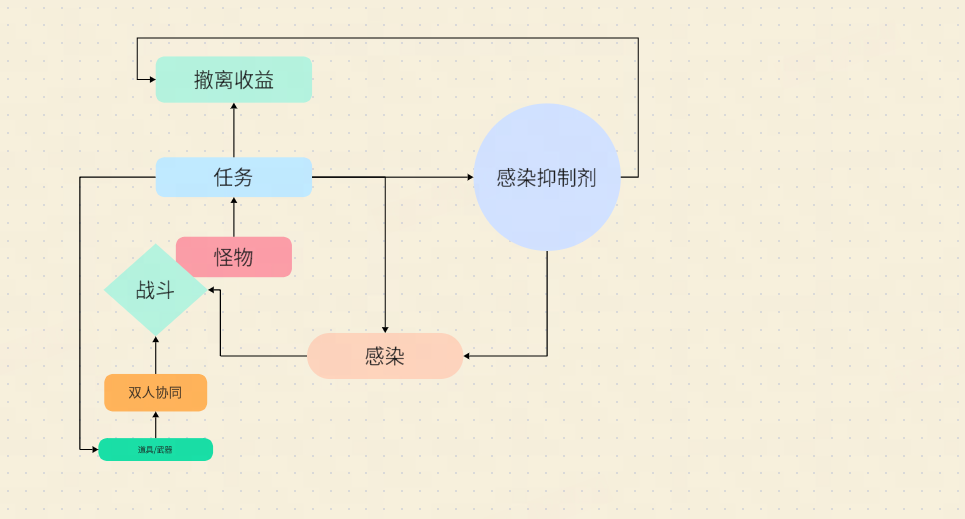

用 AI 构建系统性工程 · 第一维度
一句意图怎么长成一个玩法闭环 —— 以及这套方法里
AI 能干什么、不能干什么，非策划为什么必须懂。
MetaProject · 生化搜打撤 Demo · 两个月开发实录
素材：19 张设计图 + 12 篇设计文档
// 从零到一个循环 1 起点是什么？ 意图，一切的根源 2 怎么长成循环？ 核心变量 + 扇形展开 3 什么叫闭环？ 争夺边判定 4 取舍怎么设计出来？ 多义性 × 容量 5 钩子挂在哪？ 已拥有之物
// 从循环到判断 6 规则怎么代替内容？ 组合成本 7 规则设计的目的？ 有意义的决策 8 什么叫有趣？ 四条可判定 9 AI 的边界在哪？ 会展开不会减法 10 非策划为什么要懂？ 决策权
本章不讲「怎么做搜打撤」，讲从一句意图长出一个闭环的方法。
明确意图，才有方向。
所有设计决定，最终都在回答同一个问题：我要的体验是什么。

一个 Demo 的意图里同时写进「我要验证什么体验」和「我要验证什么协作方式」。
这是这个项目没有做成「一堆能跑的功能」的根本原因。
// 左列 → 决定玩法选型 节奏慢 · 空间立体 · 阴暗压力恐惧 // 右列 → 决定架构与协作 框架稳固 · 循环清晰 资产规范 · 面向目标的敏捷迭代
1. What experience do I want the player to have?
Jesse Schell, The Art of Game Design — Lens #2: The Lens of Essential Experience
2. What is essential to that experience?
3. How can my game capture that essence?
“The game is not the experience. It is the facilitator of the experience.”
同上，第 2 章
游戏本身不是体验，它只是体验的促成者。
整本书的第二个透镜就是这个 —— 位置说明了权重。
“From the designer's perspective, the mechanics give rise to dynamic system behavior, which in turn leads to particular aesthetic experiences. From the player's perspective, aesthetics set the tone…”
Hunicke, LeBlanc & Zubek, MDA: A Formal Approach to Game Design and Game Research, 2004
// 实现顺序 设计者：机制 → 动态 → 体验 // 感受顺序 玩 家：体验 → 动态 → 机制 ← 反的
所以设计者必须先站到玩家那一端把体验定义清楚，再倒着走回来写机制。 这个「站过去」的动作，就是明确意图。
跳过它的后果不是「设计不够好」，而是没有判据 —— 任何争论都变成比谁经验多。
「节奏慢 + 空间立体」 → 玩家要有理由反复经过同一个地方 → 搜刮 + 任务链 「阴暗 / 压力 / 恐惧 / 紧张」 → 需要持续恶化的压力源，而非一次性惊吓 → 感染 「框架稳固 / 循环清晰」 → 系统间强耦合但模块可独立 → 有中心变量的循环 「资产规范 / 谁都可以参与」 → 内容单位必须格式化（固定字段）
先说「我要做搜打撤」→ 所有讨论变成「别人怎么做搜打撤」。
先说「慢节奏立体探索 + 持续压力」→ 搜打撤是被推导出来的，可以随时被替换。
品类是意图的解，不是前提。
“Restrictions breed creativity.”
Mark Rosewater，《万智牌》首席设计师，Making Magic 专栏
（他自己也说不确定是否原创，但由他在设计圈推广）
意图是设计者给自己下的第一条约束。
它不是限制想象力 —— 它是让想象力有靶子。
为什么是「一个」？从设计、经济、体验、工程四个角度各看一遍。

图 02 ·「感染增长来源不只是时间压力，而是所有高收益行为的代价」—— 六类来源全部挂在玩家主动选择的行为上
| 来源 | 触发行为 |
|---|---|
| 区域感染 | 进入医院地下、实验室、尸潮区、孢子区 |
| 接触感染 | 被咬、被喷吐、踩入污染液、接触尸体样本 |
| 战斗感染 | 近战击杀、被血液喷溅、使用污染武器、开枪引发尸潮 |
| 道具感染 | 拾取病毒样本、感染器官、实验材料、高价值原液 |
| 任务感染 | 主动进入污染源、启动实验设备、搬运样本箱 |
| 队友感染 | 队友高感染产生「共队风险」：咳嗽噪声、吸引怪物、污染附近空间 |
// 顺序不能颠倒 ① 先定体验目的：让玩家不断评估「我还能不能继续贪」 ② 再选一个变量承载它：感染 ③ 再把所有高收益行为接到这个变量上：六类感染源 ④ 最后才是数值
「アイデアというのは、複数の問題を一気に解決するものである」
宫本茂 ·《超级马力欧 25 周年 社长が訊く》Vol.1（2010）
所谓好想法，是能一次性解决多个问题的东西。
反向使用这条判据：只解决一个问题的机制不是好想法，只是一个功能。
// 感染一个变量，解决六个问题
压力来源 · 路线动机 · 资源意义 · 协作理由 · 撤离时机 · 经济锚点
“What are the elements of my game? What are the purposes of each element? Count these up to give the element an 'elegance rating.'”
Jesse Schell — Lens #43: The Lens of Elegance
核心变量就是全项目 elegance rating 最高的那个元素。
“All economies revolve around the flow of resources.”
Ernest Adams & Joris Dormans, Game Mechanics: Advanced Game Design, 2012
“Negative feedback tends to damp out effects and produce equilibrium.”
“Positive feedback creates exponential curves.”
饥饿 / 口渴 / 体温 / 理智各自成小回路，彼此不交换资源。
玩家分四次注意力 → 四个都感觉不到。
所有正反馈与负反馈汇总到同一条曲线。
玩家只盯一个读数，感受到的是全部系统的合力。
本项目：感染是唯一主干资源，抑制剂是唯一的负反馈阀门 —— 那条争夺边就长在这个阀门上。
“That's what games are, in the end. Teachers.
Raph Koster, A Theory of Fun for Game Design, 2004
Fun is just another word for learning.”
如果乐趣来自掌握，那么变量数量直接决定学习曲线的陡峭程度。
四个并列变量 → 四条要同时学的因果链 → 学不完 → 退回凭感觉玩 一条主链 → 每局 / 每区域 / 每个怪都在教同一件事 → 反复强化
Perceivable Consequence: “A clear reaction from the game world to the action of the player.”
Doug Church, Formal Abstract Design Tools, 1999
核心变量天然满足「可感知后果」—— 所有行为指向同一个读数。分散到四个变量，每个变化都太小，后果就不可感知了。
// 回到图 01 意图右列的「功能独立 / 循环清晰」 任务模块不需要认识怪物模块，它们都只读写 感染 怪物模块不需要认识武器模块，它们都只读写 感染
核心变量就是公共总线。系统之间通过共享状态间接耦合，而不是互相调用。
涌现的前提 —— 规则挂在同一变量上，组合自动出现。
模块能独立开发、独立交付。技术上对应：感染必须是 AttributeSet，不是某个类里的 float。
「加一个新变量」永远比「把新需求接到现有变量上」容易，所以它是默认失败路径。
每次有人提议加新状态值，先问：它能不能表达为现有核心变量的一个来源或一个去处？
// 图 02 右侧：高感染收益
可以感知隐藏样本
可以看到污染痕迹
短时间提高近战伤害
通过某些怪物区域不被立刻攻击
撤离后产生更高研究积分
这是全套设计里最高级的一手。
纯惩罚机制不产生决策，只产生规避。
如果感染只是负债，最优策略永远是「越低越好」，取舍就消失了。
让高感染同时是一条 build，「贪」才有正反馈，玩家才会主动往危险里走 —— 而这正是意图里「压力、紧张」的来源。
一个变量如果只有一个来源和一个去处，它不是核心变量 —— 它只是一个计时器。
同一个变量，两种展开度：
| 只有时间一个来源 | 六类来源都接上 | |
|---|---|---|
| 玩家的感受 | 「我被计时器追着」 | 「我做的每个选择都在标价」 |
| 玩家的应对 | 加快速度，没有选择 | 选路线、选战法、选带什么 |
| 设计的可能性 | 只能调数值 | 每类来源都是一个调节旋钮 |
同一个变量，展开度决定它是「压力」还是「决策」。
// Adams / Dormans 内部经济模型 source → 六类感染源 drain → 抑制剂（被撤离经济争夺） converter → 高感染换感知 / 研究积分
扇形展开在工程上就是补齐 source 与 drain 的数量。数量不足 → 经济不成立 → 玩家没有可操作空间。
“…I'm trying to build the maximum possibility space in your head, not on the computer.”
Will Wright，Game Studies 访谈，2001
3 条规则挂在感染上 → 3 种意外局面 10 条规则挂在感染上 → 几十种
可能性空间的体积 ≈ 展开宽度的组合数，不是内容数量的加和。
// 展开的副产品是一张字段表
特殊怪：能力 / 协作反制 / 设计价值 / 适合区域
任 务：奖励 / 代价
对人：资产规范成立 —— 意图右列「谁都可以参与」的前提。
对 AI：给定格式批量补全，是它最强的能力。
展开时：八个系统与感染的关系全列出来 实现时：只做任务 × 感染 × 抑制剂 其余： 留接口不留实现
核心假设（玩家会不会为了抑制剂主动往感染里走）只需要这三个就能验证。
展开的完整性保证方向不错，实现的选择性保证成本可控。
只做前者 = 纸上帝国；只做后者 = 在第四个功能上撞墙。

图 12 · 「武器」这个扇面展开后的样子
| 系统 | 与感染的关系 |
|---|---|
| 抑制剂 | 唯一下调手段 + 最高价值战利品 |
| 任务链 | 递进推高感染 + 抑制剂来源 |
| 怪物 | 感染施加者 + 压力节奏器 |
| 武器 | 用不同方式规避 / 承担感染 |
| 道具 | 能力差异，部分自带感染代价 |
| 双人协作 | 感染状态差异制造分工与互救 |
| 地图区域 | 区域感染 + 资源倾向 |
| 撤离 | 结算感染收益 / 决定贪的终点 |
这一步是 AI 最擅长的 —— 给定「核心变量 + 一个系统」，让它穷举接口。
流程图能连回起点，不等于闭环。
全套设计的张力只在两条红边上：抑制剂用掉就换不成钱，带出就压不住感染 —— 同一份资源、两条边、互斥。（自绘，对应设计素材图 18）
玩家心智模型 → 决策 → 行动 → 系统反馈 → 更新心智模型 →（回到起点）
Daniel Cook, Loops and Arcs, lostgarden, 2012
“The goal of both loops and arcs is to update the player's mental model.”
Cook 的定义里有「决策」这一环 —— 所以流程能连回起点还不够，那一环必须真的存在选择。
边 A：抑制剂 → 降低感染 → 活下来 → 能继续贪 边 B：抑制剂 → 带出撤离 → 换钱 → 下一局更强 两条边消耗同一份资源，且互斥。
机制学复述：抑制剂同时是感染经济的 drain 和撤离经济的 source。
画完循环图，用手指指出那条争夺边。指不出来，这个循环就是假的 —— 它只是流水线。

图 05 · 第一段（0–5 分钟）必须是建立安全感 —— 恐惧来自落差，不来自绝对值
| 时段 | 设计意图 |
|---|---|
| 0–5 | 低风险搜刮，完成第 1 个任务，建立安全感 |
| 5–12 | 进入中风险区，感染明显上升，第 2 批抑制剂 |
| 12–20 | 高价值任务出现，资源紧张，队伍产生撤离分歧 |
| 20–28 | 地图污染加剧，撤离点变少，怪物密度上升 |
| 28+ | 强制高压期，Boss / 尸潮推动撤离 |
// 浣熊区医院 · 任务 4 奖励：原型抑制剂 ×1、巨额奖金 代价：启动冷库触发警报 撤离点 3 个 → 1 个 净化门需等待 90 秒
抽象层面自洽的循环，写成剧本时才会暴露「第 3 个任务其实没有代价」这类空洞。
取舍不是难度设计，是游戏的本体。
“What makes a thing into a game is the need to make decisions.”
Greg Costikyan, I Have No Words & I Must Design, 1994 / 2002
// Sid Meier · GDC 2012「Interesting Decisions」 ① 没有明显最优解 ② 存在权衡取舍 ③ 决策有持久影响 ④ 信息充分但不完全 ⑤ 容纳不同游戏风格
五条判据里，④ 信息充分但不完全是最容易被做坏的一条 —— 后面讲钩子时会回到它。
其余四条基本是设计常识，唯独这一条会被 UI 和表现层无意中破坏。

图 04 · 注意「浓缩抑制剂」那一档：降大量感染 + 撤离价值高 = 舍不得用。 梯度设计的目的不是「更好的药」，而是在顶端制造一个用不下去的手。
多义性 一份资源能用在两个以上互斥的地方（抑制剂 = 药 + 钱） 容量限制 背包格数 —— 所有取舍的物理载体 // 去掉任一项，取舍立刻消失 多义性没了 → 只剩清单化收集 容量无限 → 全都带走，不用选
| 资源 | 正向 | 负向边 |
|---|---|---|
| 弹药 | 降低战斗风险 | 开枪增加噪音，间接增加感染风险 |
| 武器 | 提供安全感 | 占背包空间，挤压抑制剂和补给 |
| 食物 | 维持体力 | 不吃会影响奔跑、搬运、近战 |
| 饮水 | — | 影响耐力恢复和感染恶化速度 |
| 医药 | 治疗血量 | 不一定降低感染 |
| 抑制剂 | 压制感染 | 有高额撤离价值（舍不得用） |
「医药不一定降低感染」是刻意的：不让两个系统共用一个解，否则感染系统会被治疗系统吃掉。
// 设计文档 §2.5 的判决 不加入武器耐久系统，避免维护 / 维修 / 资产保值抢走抑制剂的核心地位。 战斗资源限制改为：弹药类型 + 携带量 + 弹药功能差异。
一句设计判决，删掉了维修 / 保值 / 折旧一整套系统。
“Often, a better question is 'What do I need to remove?'”
Jesse Schell — Lens #43: The Lens of Elegance
“I didn't hold back on removing and subtracting elements as needed. If something felt unfinished or unnecessary, I cut it.”
上田文人，《ICO》2002 开发者访谈（shmuplations 译）
判断一个功能要不要做，看它是否争夺核心变量的注意力。 耐久系统本身没问题 —— 它的问题是会变成第二套经济。
“Given the opportunity, players will
optimize the fun out of a game.”“Therefore, one of the responsibilities of the designer is to protect players from themselves.”
Soren Johnson（《文明 4》主设计师），GD Column 17: Water Finds a Crack, 2011
// 「water finds a crack」—— Civilization 团队的说法：设计里任何一个缝，玩家一定会反复钻 高感染收益调太强 → 出现「故意保持 90% 感染」的极限流 抑制剂产出略多 → 「贪」不再有代价，取舍消失 撤离惩罚偏轻 → 最优策略变成「速刷第 1 个任务就撤」，25 分钟节奏塌掉
所以数值不是「填一下就行」，它是堵缝 —— 这也是数值必须由人来调的原因。
钩子挂在哪里才有效？答案不是「更大的奖励」。

图 06 · 收益 15 倍，风险是四个「+ 一档」
收益：100 → 250 → 600 → 1500
风险：感速 +30% / 密度 +20%
撤离等待 +15s / 封锁 +1
玩家能算清收益（1500 就是 1500），算不清风险（+30% 感速到底意味着什么？）。
// 命中 Meier 判据 ④ 信息完全 → 算期望值 → 钩子失效 信息不足 → 变成瞎猜 → 钩子失效 充分但不完全 → 有直觉没把握 → 成立
| 类型 | 素材原文 | 机理 |
|---|---|---|
| 递增钩子 | 「做到第 2 个就走？还是赌第 3 个？要不要冲第 4 个高级抑制剂？」 | push your luck：收益曲线的感知斜率必须陡于风险曲线 |
| 社交钩子 | 「队友感染 80%，你身上有一支高级抑制剂。你是救他，还是留着撤离换高额奖金？」 | 挂在人际关系上 —— 制作成本最低、强度最高 |
| 信息钩子 | 「A 看到实验室门上的符号，B 在档案室看到符号对应的密码」 | 制造「必须交流」的时刻，交流本身就是内容 |
| 未完成钩子 | 「撤离点从 3 个变成 1 个，净化门需要等待 90 秒」 | 把「结束」变成一场遭遇，取消胜利的平滑落地 |
前景理论提出损失厌恶：相对于参考点，同等幅度的损失带来的心理冲击显著大于收益带来的愉悦。后续研究给出系数约 λ ≈ 2.25。
Kahneman & Tversky, Prospect Theory, Econometrica 47(2), 1979；Tversky & Kahneman, 1992
| 弱写法（收益框架） | 强写法（损失框架） |
|---|---|
| 「再做一个任务能拿 1500」 | 「现在撤，第 4 个任务的 1500 就没了」 |
| 「救队友能获得协助」 | 「队友感染 80%，你手上有药」 |
| 「撤离点有 3 个」 | 「撤离点从 3 个变成 1 个」 |
素材里的钩子全部是右列写法。同一个钩子，写成「失去」比写成「得到」强两倍以上。
小团队只有一个选择。
“Fun is just another word for learning.” —— 当玩家不再学到新东西，新鲜感就结束了，与内容量无关。
Raph Koster, A Theory of Fun for Game Design, 2004
| 内容型 | 规则型 | |
|---|---|---|
| 增加一份新鲜感的成本 | 一个新关卡 / 新怪 / 新剧情 | 一条新规则（可能只是一行配置） |
| 增长曲线 | 线性 | 组合（≈ 平方级） |
| 消耗方式 | 一次性，看过即失效 | 反复生效，互相叠加 |
| 失败风险 | 做多了做不完 | 规则冲突、平衡崩塌 |
| 适合谁 | 有产能的大团队 | Demo / 小团队 |
代价要说清楚：规则型把成本从美术产能转移到了设计验证上（回到「water finds a crack」）。
图 12 · 六个区域，各有资源结构
我缺弹药，去警局。 我缺药，去医院。 我想赌高价值抑制剂，去制药厂。 我想低风险补给，去别墅区。
全套设计里最精炼的一段。
同一张地图，每局因为「缺什么」不同而走出不同路线 —— 新鲜感来自缺口的随机，不来自地图的数量。

图 09 · 入局携带 6 类 + 局内临时道具 6 种
职业系统：3 个职业 = 3 种分工，每局一样 携带系统：6 类选 2–3 件 = 数十种组合 且局内道具还会再变
而且分工是涌现的 —— 谁拿了电池组，谁就自动是「去恢复电力的那个人」，不需要 UI 上标一个职业。
// 感染状态本身也是动态 build 低感染 → 远程 / 解谜 / 精密操作 中感染 → 感知污染痕迹、找隐藏样本 高感染 → 近战增强、可穿污染区，但易失控
不是「好玩」。「好玩」不是目的，是结果。
“Meaningful play occurs when the relationships between actions and outcomes in a game are both discernable and integrated into the larger context of the game.”
Katie Salen & Eric Zimmerman, Rules of Play: Game Design Fundamentals, MIT Press, 2004, Ch.3
| 条件 | 含义 | 本项目对应 |
|---|---|---|
| Discernable 可辨识 | 玩家能看到自己的行为产生了什么结果 | 感染条是唯一读数，所有行为都指向它 |
| Integrated 已融入 | 结果持续影响后续可能性，不是孤立反馈 | 感染影响能力倾向、怪物追踪、撤离价值、队友风险 |
「Integrated」这条是大多数系统失败的地方 —— 有反馈（数字变了），但那个数字不影响任何后续决策。 于是它可辨识但未融入，玩家两局之后就不再看它。
Intention: “Making an implementable plan of one's own creation in response to the current situation in the game world and one's understanding of the game rules.”
Doug Church, Formal Abstract Design Tools, 1999 —— 注意这里是玩家的意图
设计者意图（我要什么体验） → 规则 → 玩家能形成自己的计划（Church 的 intention） → 玩家看到后果（perceivable consequence） → 体验产生
设计者意图的成功标志，就是玩家能生成自己的意图。
玩家只能照着提示做，说明规则没给出可规划的空间。
更古老的边界 —— Chris Crawford《The Art of Computer Game Design》(1984)：没有真正的交互（系统会因你而变），那只是一道谜题，不是游戏。

图 16 · 标题本身就是判据。没有一栏写的是「血量 3000、攻击力 80」
| 特殊怪 | 设计价值（原文） |
|---|---|
| 拖拽者 | 惩罚过度分离；制造救援时机；让霰弹枪、近战、精准射击都有用途 |
| 肿胀者 | 让玩家不能无脑近战；让击杀位置变成决策 |
| 尖啸者 | 把战斗和 PvPvE 连接起来；让开门、潜行、远程观察变得有意义 |
| 寄生者 | 让医疗工具和抑制剂有战斗价值；让感染不只是环境 debuff，而是敌人能力的一部分 |
| 追猎者 | 把高价值战利品变成烫手山芋；让后期任务和撤离形成高潮 |
这一栏就是给 AI 的判据 —— 写下这条规则后，AI 生成第 6 个怪时会自己补齐「设计价值」和「协作反制」，而不是继续堆数值。
「有趣」是可以被拆解的，不是玄学 —— 所以它能被检查。
「我本来打算 X，结果因为 Y，我做了 Z。」
这句话不是修辞：「本来打算」= intention 成立；「因为 Y」= perceivable consequence 成立；「我做了 Z」= integrated 成立。三条学术判据同时满足。
| # | 检查项 | 素材证据 | 理论对应 |
|---|---|---|---|
| ① | 有取舍：不存在唯一最优解 | 抑制剂用 or 带出 | Meier 判据 ① |
| ② | 信息有代价：不免费给情报 | 病毒检测仪能识别高价值样本，但使用会暴露位置 | Meier 判据 ④ |
| ③ | 失败可复述：败因是决策不是数值 | 「我贪了第 4 个任务」 vs 「我血少了」 | Salen & Zimmerman：integrated |
| ④ | 有涌现：产生设计者没写过的局面 | 开枪吸引尸潮 + 敌队交火 + 高感染被优先追踪 | Will Wright：possibility space |
反判定：如果玩家的最优策略每局都一样，这个设计就不有趣 —— 美术再好也不行。
验收方法：找 3 个人各玩 5 局，路线和取舍趋同 = 规则耦合不够。

图 17 · 四组交叉绑定
做法只有一条：让规则挂在同一个变量上，而不是互相调用。
// 素材里的涌现全部来自感染这条总线
「携带抑制剂或高感染玩家
更容易被追猎者发现」
= 道具规则 × 感染规则 × 怪物 AI 规则
如果这三条靠 if-else 互相调用实现，就只有设计者写过的那几种组合；挂在同一变量上，组合是自动出现的。
这也是技术上感染必须是 AttributeSet 而不是一个 float 的原因 —— 设计上的涌现需求，直接决定了技术实现方式。
AI 会展开，不会减法。
扇形展开：给定「感染」，穷举六类来源、六类工具、五个特殊怪、六种战斗类型
对称补全：一旦确定四栏格式，后续每个怪都会自己补齐
一致性检查：「哪个资源还没有负向边」
给结构：价值 = 基础 × 纯度 × 阶段 × 污染风险
不会做减法：「武器不做耐久」这类判决它不会主动提，倾向把每个系统都做全
不会选核心变量：你说「加个生存压力」，它给你饥饿+口渴+体温+理智四个
数值凭感觉：100/250/600/1500 它给得出，但斜率是否形成钩子它判断不了
不会拒绝需求：包括那些会稀释核心体验的
人：定意图 · 选核心变量（只准一个）· 做减法 · 调数值斜率 AI：扇形展开 · 对称补全 · 一致性扫描 · 给结构不给数值
本章最重要的一句
判据成文，AI 才有靶子；
判据在人脑里，AI 每次都要重新猜。
// 可以直接进设计文档的判据清单 每个资源必须有一条负向边。 每个任务阶段必须有奖励 + 代价两栏。 每个特殊怪必须回答：它改变玩家哪个行为。 每个新系统必须回答：它和核心变量是什么关系。 任何新机制若形成第二套经济，默认不做。
现场演示建议：把「每个特殊怪都应该对应一个协作问题」加进 prompt 前后，让 AI 各生成一个新怪，对比输出。
在 AI 参与开发之后，不懂设计的代价从「沟通成本」升级成了「决策权丧失」。
// 过去的分工建立在产能稀缺上 稀缺的是「想清楚」，也稀缺「写出来」和「跑得动」 —— 三件事分给三种人 // AI 压掉了「写出来」这一段 实现便宜 → 方案数量爆炸 → 选择成本上升 → 判断力成为唯一瓶颈
被压缩成一个转述者 —— 上游给需求，你转成 prompt，下游收代码。
位置变成审稿人 —— 你能说出「这个方案服务不了核心体验」，而这句话 AI 说不出来。
| 没有判据时你只能说 | 有判据时你可以说 |
|---|---|
| 「这个工作量太大」 | 「这会形成第二套经济，抢走抑制剂的注意力」 |
| 「实现起来有点麻烦」 | 「它的 elegance rating 只有 1」 |
| 「我觉得不太好玩」 | 「玩家最优策略不变，所以它不产生决策」 |
左列是抱怨，右列是评审意见。差别不在态度，在词汇。
| 技术决定 | 真实依据（设计判据） | 不懂设计会怎么选 |
|---|---|---|
| 感染是 AttributeSet 不是 Character 上的 float | 涌现要求规则挂在共享状态上而非互相调用 | 选 float —— 更简单，且涌现永远做不出来，没人知道为什么 |
| 外观/动画/音效/Cue 全集中在 ItemDefinition | 抑制剂一物四用，要同时接背包 / GAS / 结算 / 撤离 | 散进蓝图 —— 之后每加一个职责都要改代码 |
| 玩家数据归 PlayerState 而非 Controller | 断线重连、死亡换 Pawn 后必须能恢复 | 放 Controller —— 重连后玩家资产丢失 |
| Spawner 只生成， 不决定为什么生成 | 怪物是压力工具，投放依据是压力/感染/任务阶段 | 把投放写进 Spawner —— Director 层永远长不出来 |
| 多个属性用最后一个 bool 触发 OnRep_ | 感染状态是一个逻辑整体，半个状态被读到会出错误表现 | 各自通知 —— 客户端表现闪烁，且难复现 |
架构的每一次分层，背后都是一条设计判据。判据你不知道，分层就只是「别人说要这样」—— 你既无法维护它，也无法在它错的时候反对它。
| 信息 | 必须的呈现方式 | 错误做法 |
|---|---|---|
| 抑制剂价值 | 精确数字（1500） | 用「很值钱」这类模糊描述 → 玩家算不出收益，不会贪 |
| 感染风险 | 氛围化（画面色偏、呼吸声、视野扰动） | 做成精确百分比进度条 → 玩家开始算期望值，钩子当场失效 |
这个决定通常不由策划做出，而且不会有人来审 —— 除了懂「可精算的收益 + 模糊感知的风险」那一条的人。
设计判据不落到表现层，就等于没有。而落地这一步，做的人不是策划。
// 同类例子 装甲感染者「弱点在背部/腿部/头部缝隙」→ 造型上必须有明确的「缝」，受击反馈要能区分有效/无效 否则这个怪退化成血包，设计意图在美术层被静默丢弃 感染四状态 → 需要一条可复制、可插值、可被 Cue 触发的视觉参数链，且队友身上也要可读 场景辨识度 → 认不出那是医院，「我缺药去医院」整条规则链断掉
| 来自哪个环节 | 只有这个环节能写出的判据 |
|---|---|
| 玩法设计 | 每个特殊怪必须对应一个协作问题 |
| 造型与打击感 | 设计价值必须在造型和受击反馈上可读 |
| 信息呈现 | 收益用精确数字，风险用氛围 |
| 状态同步 | 最终状态必须一致的东西显式复制 |
| 动作衔接 | 不用同帧状态判断异步事件 |
AGENTS.md 是全员文件。后四条策划写不出来 —— 但它们同样决定设计能不能成立。条目一旦写下，AI 每次生成都遵守，收益是复利的。
设计知识告诉你：该验证什么 技术能力告诉你：怎么验证 两者缺一，验证都做不成
| 只有技术能力时验证 | 懂判据后验证 |
|---|---|
| 帧率、内存、有没有崩 | 3 人各 5 局，路线取舍是否趋同 |
| 特效播出来了 | 队友感染状态在独立客户端是否可读 |
| 数值填进表里了 | 有没有出现「故意保持 90% 感染」的极限流 |
在 AI 时代，能证伪输出的人，比能生成输出的人稀缺。
“Each component of the MDA framework can be thought of as a 'lens' or a 'view' of the game – separate, but causally linked.”
Hunicke, LeBlanc & Zubek, 2004 —— 三个视角，一套词汇
“The notion of 'Formal Abstract Design Tools' is an attempt to create a framework for such a vocabulary and a way to discuss design at a higher level of abstraction.”
Doug Church, 1999 —— 他明确希望这套词汇帮团队在「技术实现」和「玩家体验」之间建立清晰沟通
所以非策划学设计不是抢活，是补上那条本来就该存在的公共词汇。
在 AI 加入之后，这条词汇还多了一个新用途：它是唯一能让 AI 稳定对齐的接口。
意图 一切的根源。先站到玩家那端定义体验，再倒着走回来写机制。 核心变量 只准一个。elegance rating 最高的那个元素，也是模块解耦的总线。 扇形展开 每个系统只回答「我和核心变量是什么关系」。展开定方向，实现选一个扇面。 闭环 用手指指出那条争夺边。指不出来就是流水线。 取舍 多义性 × 容量限制。每个资源都要有一条负向边。减法比加法重要。 钩子 挂在已经拥有的东西上。收益可精算，风险要模糊。 新鲜感 规则代替内容。组合成本 < 线性成本。 有趣 玩家能讲出「我本来打算 X，结果因为 Y，我做了 Z」。 AI 会展开、会补全、会扫描；不会减法、不会选变量、不会判斜率。 非策划 判据不落到表现层就等于没有。能证伪 AI 的人最稀缺。
资源 —— 资产是约束条件，不是产出物。先跑起来 → 划结构性/替身 → 双向匹配 → 规范先立。
组织实践 —— 结构约束 / 知识约束 / 验证约束，以及一次完整的排查复盘。
图注：说明这段视频在讲什么（不要写「演示视频」这种废话）
正文

图注

正文

a

b

c

d
一句话说明这一章要解决什么。
（.q2 青色 / .warn 红色，用于「出处存疑」这类警告） 代码：（.sm 小号）内部 span：.c 注释 .k 关键字 .t 类型 .hl 高亮 .s 字符串 表格：（.sm / .xs 更小号，行多时用） 布局：.cols 两列 / .cols3 三列 / .card 卡片（.k2 青 / .kb 红） 图片：加 class="shot" 就自动获得点击放大；data-cap 是灯箱底部说明 ================================================================ -->